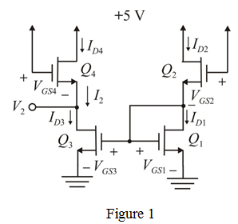

Step 1:
Refer to Figure P5.60 in the textbook for the circuit.
Redraw the circuit by representing currents and voltages as shown in Figure 1.

Step 2:
Drain and gate terminals of transistor  are short circuited. Hence, the transistor
are short circuited. Hence, the transistor  is in saturation region. Assume transistor
is in saturation region. Assume transistor  is also in saturation region. Drain currents of both the transistors are same. So, the gate to source voltages of both the transistors is same.
is also in saturation region. Drain currents of both the transistors are same. So, the gate to source voltages of both the transistors is same.
Apply Kirchhoff’s voltage law from supply to ground for  and
and  loop.
loop.
Therefore,
Step 3:
Step 4:
From the circuit, the voltage is,
In the circuit arrangement,  and
and  combination acts like current mirror circuit.
combination acts like current mirror circuit.
Hence, the current is,
The current  is,
is,
Therefore, the current  is, .
is, .
Transistor  is also in saturation. The current is,
is also in saturation. The current is,
Gate to source voltage of  and
and  transistors are same.
transistors are same.
From the circuit, write the following relation:
Therefore, the voltage  is, .
is, .
Step 5:
The new width of the channel is, .
The new drain current of transistor  is,
is,
The current  is,
is,
Step 6:
From the circuit, the voltage is,
In the circuit arrangement,  and
and  combination acts like current mirror circuit.
combination acts like current mirror circuit.
Hence, the current is,
The current  is,
is,
Therefore, the current  is,
is,  .
.
Transistor  is also in saturation. The current is,
is also in saturation. The current is,
Gate to source voltage of  and
and  transistors are same.
transistors are same.
From the circuit, write the following relation:
Therefore, the voltage  is, .
is, .
Hence, there is no change in voltage  .
.
 is,
is, , for
, for  ,
,  for
for  ,
,  for
for  , and for
, and for  in the equation.
in the equation. is,
is,